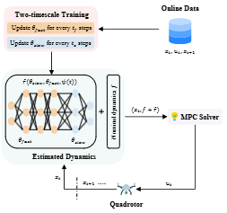
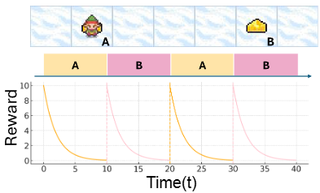
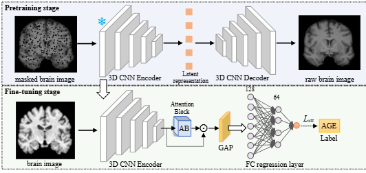

Memory-Computation Tradeoffs in Semi-Amortized Parametric Optimization
Shijie Pan, Zeyu Shen, Agustin Castellano, Enrique Mallada.
Submitted to NeurIPS 2026.
M.S. Student in Applied Mathematics and Statistics, Johns Hopkins University
Email: zshen39@jhu.edu
I am an M.S. student in the Department of Applied Mathematics and Statistics at Johns Hopkins University. During this period, I have been fortunate to be advised by Prof. Laixi Shi.
What I value most in intelligence is how quickly an agent can learn new skills and adapt to new environments. Basically, I am interested in how intelligent systems can learn, adapt, and make decisions in environments that are changing, partially known, or difficult to model exactly. I study these questions at the intersection of machine learning for decision making, model predictive control, representation learning, and world model.
In addition to empirical research, I am also interested in problem-driven theory. I view theory as a way to explain why empirical methods work and to provide guidance for us to design better.
```
T2S-MPC: Time-Embedded Two-Timescale Online Adaptive MPC for Time-Varying Dynamics
Zeyu Shen, Zhuoyuan Wang, Laixi Shi.
Submitted to CDC 2026.
Memory-Computation Tradeoffs in Semi-Amortized Parametric Optimization
Shijie Pan, Zeyu Shen, Agustin Castellano, Enrique Mallada.
Submitted to NeurIPS 2026.

Optimal Control of the Future via Prospective Foraging
Yuxin Bai, Aranyak Acharyya, Ashwin De Silva, Zeyu Shen, James Hassett, Joshua T. Vogelstein.
Proceedings of the 8th Annual Learning for Dynamics & Control Conference, L4DC 2026.

Uncovering the Domain Gap between Computer Vision and Brain Imaging: A Study on Pretraining for Age Prediction
Yanteng Zhang, Songheng Li, Zeyu Shen, Qizhen Li, Lipei Zhang, Yang Liu, Vince Calhoun.
IEEE International Symposium on Biomedical Imaging, ISBI 2026.

Fast MPC via Non-parametric Warm-up
Shijie Pan, Zeyu Shen, Enrique Mallada.
Please feel free to reach out by email: zshen39@jhu.edu.